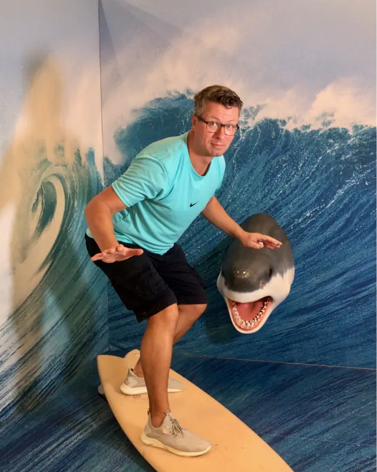
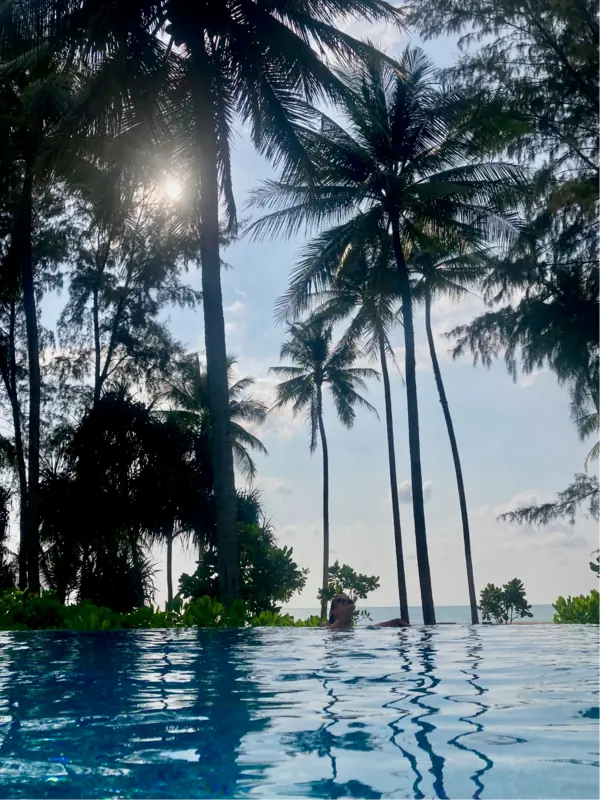
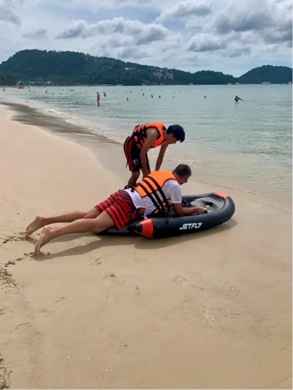

<section class="dmAbout" id="about" aria-labelledby="dmAboutT"><article>
<p class="dmAbEye">About DipMapper · Founder interview</p>
<h2 id="dmAboutT">“A good place to swim should be easier to find.”</h2>
<p class="dmAbLead">A conversation with Torsten Sauter, founder of DipMapper, about finding your next swim, the details that make a day out work, and building a service around a simple pleasure.</p>
<div class="dmAbIntro">
<figure class="dmAbFig dmAbPortrait"><figcaption>Torsten Sauter, founder of DipMapper.</figcaption></figure>
<div class="dmAbText">
<p>A photograph can make you want to visit a swimming spot without telling you much about spending time there. Where do you get into the water? Are there changing rooms? Is it somewhere for a quick swim, or somewhere you could comfortably spend the afternoon?</p>
<p>DipMapper brings those practical questions into the search. Its map covers beaches, lakes, pools and baths, with place cards that bring together information such as facilities, weather, parking and links to the underlying sources. Switzerland-based founder Torsten Sauter wants to make choosing somewhere to swim easier, both close to home and somewhere unfamiliar.</p>
<p>We asked him why that choice deserves a service of its own, what useful local knowledge looks like, and where he would like DipMapper to go next.</p>
<h3>What made you think there was room for a service dedicated to finding places to swim?</h3>
<p>I wanted to make an ordinary decision easier. You have some time, you would like to go swimming, and you need to choose where.</p>
<p>Finding the name of a beach or a pool is only the beginning. You then want to understand the place. Can you get there easily? What will you find when you arrive? Does it suit the people coming with you? Those questions become especially important somewhere unfamiliar.</p>
<p>The idea behind DipMapper is to bring more of that decision into one place. I am interested in the moment when somebody moves from “we could go swimming” to having a plan they feel good about. A useful service should help with that, without making a simple outing feel like a research project.</p>
</div></div>
<blockquote class="dmAbQuote">“The photograph should make you curious; the details should help you decide.”</blockquote>
<div class="dmAbCols">
<figure class="dmAbFig dmAbSide"><figcaption>Pool, lake or sea: the right choice depends on the day, the weather and who is coming along.</figcaption></figure>
<div class="dmAbText">
<h3>Why put beaches, lake baths, swimming pools and thermal baths together? They offer quite different experiences.</h3>
<p>Exactly, and that is why the differences need to be visible. DipMapper includes those different types of places rather than treating swimming as one narrow activity.</p>
<p>You might want to swim lengths today and spend a relaxed afternoon by a lake tomorrow. On holiday, you might be interested in a beach. On a cold or rainy day, you might prefer an indoor pool or a warm bath.</p>
<p>I would rather begin with what somebody wants from the visit than decide in advance which kind of swimming deserves attention. A practical local pool can be a much better recommendation than a spectacular stretch of coastline when it fits the time, weather and company.</p>
<p>The purpose is to make those alternatives easier to understand, not to pretend they are interchangeable.</p>
<h3>How much has living in Switzerland influenced the idea?</h3>
<p>It gives the project a very concrete starting point. Our guides around Zürich include lake baths, river swimming, indoor pools and thermal bathing. Even within a relatively focused area, there are different reasons to choose one place over another.</p>
<p>That variety interests me. You can be looking at the same body of water and still be considering quite different outings, depending on the access, the facilities and the setting.</p>
<p>But I do not want my own surroundings to define the limits of the service. The useful question travels well: what are the swimming options here, and which one suits what I have in mind?</p>
<p>Switzerland helps make the idea tangible. The ambition is to make it useful wherever someone happens to be looking.</p>
</div></div>
<div class="dmAbText dmAbFlow">
<h3>Suppose I open DipMapper with a couple of hours free. What do I actually do?</h3>
<p>You can use your location, search for a destination or choose a point on the map. From there, you explore the nearby results and open a place card for more detail. The cards bring together photos, weather, prices, facilities, parking and source links where available.</p>
<p>Then you make the choice that fits your day. With two hours available, convenience may matter more than finding somewhere exceptional. With a whole afternoon, you might be happy to travel farther and spend more time there.</p>
<p>I want the first visit to feel straightforward. You should be able to arrive with a particular destination in mind, but “somewhere near here” should be a perfectly good starting point too. You should not have to know the name of the place before a discovery service becomes useful.</p>
<h3>Which details make the biggest difference to a recommendation?</h3>
<p>The ones that change whether you would actually go.</p>
<p>An entrance location may sound uninteresting until you are trying to find it. Changing rooms may be irrelevant for one visit and important for another. Someone travelling with children may care about facilities that a person going alone for a short swim would barely notice.</p>
<p>I also think descriptions should explain distinctions. “Beautiful water” tells you very little when every result says it. I would rather understand whether a place offers a simple entry point and little else, or a managed bathing facility where you could spend several hours.</p>
<p>That is the standard I want to work towards: information that changes a decision. The photograph should make you curious; the details should help you decide.</p>
<h3>Why would someone use DipMapper rather than an ordinary map or a travel article?</h3>
<p>Because they have a specific question, and I want to give them a more focused starting point.</p>
<p>I am not suggesting that someone should abandon the other sources they trust. A good local website or an operator’s page can be exactly what you need. DipMapper should make useful sources easier to reach while helping you compare the options first. The place cards include links to operators and other relevant sources.</p>
<p>The value has to come from how the information helps you choose. Merely repeating a place name on another website would not be enough.</p>
<p>My test is whether the service reduces the amount of searching and interpretation someone has to do before they have a sensible shortlist.</p>
<h3>Is this primarily for discovering somewhere on holiday, or for finding places near home?</h3>
<p>Both, and I would not want to sacrifice either. The published guides already bring together destinations such as Zürich and Meilen with Rhodes, Miami, Rostock and Warnemünde, and Palma de Mallorca.</p>
<p>When you are travelling, you may need help with almost everything: the local names, the different types of places, access and facilities. Near home, you may already know your usual options but still appreciate finding an alternative.</p>
<p>I particularly like the idea that a discovery service can be useful without requiring a major trip. Someone might find a place nearby that they had never considered. That is a worthwhile result.</p>
<p>For me, the holiday use and the everyday use belong together. Both depend on understanding a place well enough to decide whether to visit.</p>
<h3>Can you really identify the “best” place to swim?</h3>
<p>Only when you understand what “best” means for that visit.</p>
<p>A person who wants uninterrupted swimming and someone who wants a leisurely afternoon with friends may make different choices. Neither needs to be persuaded that the other has chosen badly.</p>
<p>I am wary of presenting a single ranking as though it settles the question for everyone. A recommendation becomes more useful when you can understand why a place might suit you and what the compromises are.</p>
<p>That is the direction I want for DipMapper. Give people enough context to recognise a good match. Leave room for personal preference. And accept that the same person may want something quite different next weekend.</p>
<h3>What should someone never assume merely because a place appears on the map?</h3>
<p>That its presence amounts to a guarantee that they should enter the water.</p>
<p>I want DipMapper to help people prepare, while being clear about the limits of a listing. Weather information is not a water-quality test. Information about a facility is not confirmation of the conditions someone will encounter at the moment they arrive.</p>
<p>That is why the underlying sources matter. Our guides distinguish, for example, between supervised seasonal facilities and places without a lifeguard, and point readers towards operator information. Those differences should remain visible.</p>
<p>I do not see a conflict between making discovery appealing and being precise about what we know. People need useful information, including the parts that may change their plans.</p>
<h3>You have described the approach behind your projects as open-source intelligence. What does that mean here?</h3>
<p>In this context, it means using publicly available information and doing useful work with it.</p>
<p>The information may already exist, but finding it is only part of the task. You need to establish whether different sources refer to the same place, understand what each one actually tells you, and present the result in a way that helps someone make a decision. That is the approach shared across these projects.</p>
<p>I find that work interesting because the benefit can be very practical. A visitor should not have to reconstruct the same picture from the beginning every time they consider somewhere new.</p>
<p>But collecting more information is not automatically an improvement. The important part is selecting, checking and explaining it. Otherwise, you have given somebody more material to read without making their choice any easier.</p>
<figure class="dmAbFig dmAbWide"><figcaption>An afternoon by the water can involve more than a swim.</figcaption></figure>
<h3>Where do water sports fit into your plans?</h3>
<p>They are a natural direction to explore, because an afternoon around the water can involve more than swimming.</p>
<p>But I would approach that carefully. A place that suits a swim does not automatically suit another activity. Each activity brings its own questions about access, facilities, local rules and conditions.</p>
<p>I would like DipMapper to become more useful for planning time in and around the water. That could include a broader range of activities, provided we can explain them properly rather than simply add another label to a place card.</p>
<p>For now, the central task remains clear: help someone find and understand a swimming place. Any expansion should build on that usefulness, rather than make the basic experience harder to navigate.</p>
<p class="dmAbNote"><b>Update, October 2026.</b> Since this conversation, DipMapper has added Paddle, Dive, Sail, Boats, Rafting and Specials, each with its own live conditions, rules, safety notes and sources. Choose them on the start screen or above the results.</p>
<h3>Is DipMapper a business, or a personal project that has grown?</h3>
<p>The motivation is personal. I enjoy exploring what is possible and making something that other people might genuinely value.</p>
<p>That does not remove the practical questions. A service needs maintaining, and continuing to improve it has to be sustainable. But I do not want the commercial discussion to become more important than the reason someone opened the website.</p>
<p>My priority is to make the basic experience worth returning to. I want people to discover whether DipMapper helps them and to feel that using it was time well spent.</p>
<p>There may be different ways to support its development over time. Whatever model makes sense, it should respect the user’s reason for being there: to find somewhere they would like to go swimming.</p>
<h3>What would you most like to improve as the service develops?</h3>
<p>The quality of the decisions it helps people make.</p>
<p>That means better distinctions between places, useful coverage and an experience that remains straightforward on a phone. It also means paying attention to things that do not produce an exciting announcement. A clearer description, a corrected location or a more useful source link can matter more than a new feature.</p>
<p>I would also like feedback to be specific. What did someone struggle to understand? What did they still have to search for elsewhere? What surprised them when they arrived?</p>
<p>Those are useful questions because they connect development to a real visit. I do not want to judge progress only by how much we have added. I want to know whether choosing a place has become easier.</p>
<h3>You also created CurveScout, and you are working on Nestlyzer. What connects them?</h3>
<p>They deal with different interests, but they share a practical idea: help someone understand a place before choosing what to do there.</p>
<p>CurveScout focuses on riding and discovering roads. DipMapper focuses on swimming places. Nestlyzer explores municipalities and the question of where to live. The decisions differ, but each involves comparing places against your own priorities.</p>
<p>I like that combination of information and personal choice. You can organise the facts carefully without assuming that everybody should reach the same conclusion.</p>
<p>Each service still has to justify itself. Someone looking for a swimming pool does not need to be interested in my other projects. DipMapper needs to be useful on its own.</p>
<h3>What would make you proudest of DipMapper a few years from now?</h3>
<p>That people return because it consistently helps them.</p>
<p>I would love it to become a trusted starting point for choosing somewhere to swim. That could mean helping someone find a beach on holiday, understand the options around a lake, or discover a pool that fits into an ordinary working week.</p>
<p>The moments I have in mind are quite specific. Someone has a free afternoon, finds a place they would otherwise have missed, and enjoys going there. Another person feels more comfortable trying somewhere unfamiliar because they understand what to expect.</p>
<blockquote class="dmAbQuote">“Somebody finds a place that suits them and is glad they went.”</blockquote>
<p>I am ambitious about how useful DipMapper could become. But the result I care about is still simple: somebody finds a place that suits them and is glad they went.</p>
</div>
</article></section>
